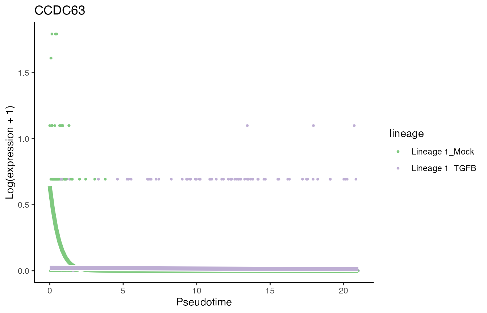
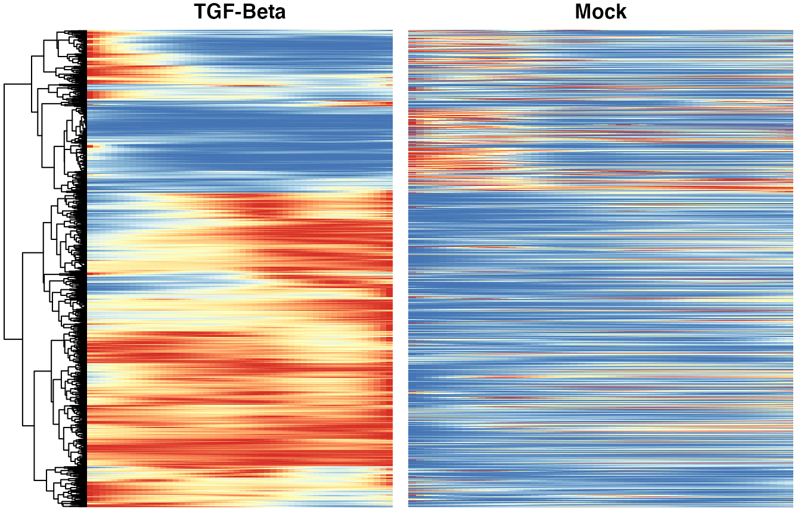

Analysis of the TGFB datataset
Hector Roux de Bézieux, Koen Van den Berge and Kelly Street
TGFB.RmdOverview
We reproduce a lot of code from the Bioc 2020 trajectory workshop.
Dataset
The dataset we will be working with concerns a single-cell RNA-sequencing dataset consisting of two different experiments, which correspond to two treatments. McFaline-Figueroa et al. (McFaline-Figueroa et al. 2019) studied the epithelial-to-mesenchymal transition (EMT), where cells spatially migrate from the epithelium to the mesenchyme during development.
Load data
The data is imported using a function from the package. We then normalized using Seurat(Stuart et al. 2019) and compute reduced dimension coordinates with UMAP (Becht et al. 2019, @McInnes2018).
tgfb <- condimentsPaper::import_TGFB()
library(Seurat)
########################
### Split by condition and convert to Seurat
########################
assays(tgfb)$logcounts <- log1p(assays(tgfb)$counts)
tgfbMock <- tgfb[ ,colData(tgfb)$pheno$treatment_id=='Mock']
tgfbTGFB <- tgfb[ ,colData(tgfb)$pheno$treatment_id=='TGFB']
soMock <- as.Seurat(tgfbMock)
soTGFB <- as.Seurat(tgfbTGFB)
########################
### Normalize
########################
soMock <- SCTransform(soMock, verbose = FALSE)
soTGFB <- SCTransform(soTGFB, verbose = FALSE)
########################
### Integrate
########################
dtlist <- list(Mock = soMock, TGFB = soTGFB)
intfts <- SelectIntegrationFeatures(object.list = dtlist, nfeatures = nrow(tgfb)) # maxes out at 4080 (why?)
dtlist <- PrepSCTIntegration(object.list = dtlist,
anchor.features = intfts)
anchors <- FindIntegrationAnchors(object.list = dtlist, normalization.method = "SCT",
anchor.features = intfts)
integrated <- IntegrateData(anchorset = anchors, normalization.method = "SCT")
integrated <- RunPCA(integrated)
integrated <- RunUMAP(integrated, dims = 1:50)
## convert back to singleCellExperiment
tgfb <- as.SingleCellExperiment(integrated, assay = "RNA")
data("tgfb", package = "condimentsPaper")
df <- bind_cols(
as.data.frame(reducedDims(tgfb)$UMAP),
as.data.frame(colData(tgfb))
) %>%
sample_frac(1)
p1 <- ggplot(df, aes(x = UMAP_1, y = UMAP_2, col = pheno.treatment_id)) +
geom_point(size = .7) +
scale_color_brewer(palette = "Accent") +
labs(col = "Treatment")
p1
p2 <- ggplot(df, aes(x = UMAP_1, y = UMAP_2, col = pheno.spatial_id)) +
geom_point(size = .7) +
scale_color_brewer(palette = "Dark2") +
labs(col = "Spatial ID")
p2
scores <- condiments::imbalance_score(
Object = df %>% select(UMAP_1, UMAP_2) %>% as.matrix(),
conditions = df$pheno.treatment_id,
k = 20, smooth = 40)
df$scores <- scores$scaled_scores
p3 <- ggplot(df, aes(x = UMAP_1, y = UMAP_2, col = scores)) +
geom_point(size = .7) +
scale_color_viridis_c(option = "C") +
labs(col = "Scores")
p3Trajectory Inference and Differential Topology
To estimate the trajectory, we use slingshot (Street et al. 2018).
library(slingshot)
tgfb <- slingshot(tgfb, reducedDim = 'UMAP',
clusterLabels = colData(tgfb)$pheno$spatial_id,
start.clus = 'inner', approx_points = 100)## Using full covariance matrix
set.seed(821)
topologyTest(SlingshotDataSet(tgfb), tgfb$pheno$treatment_id, rep = 100,
methods = "KS_mean", threshs = .01)## Generating permuted trajectories## Running KS-mean test## method thresh statistic p.value
## 1 KS_mean 0.01 0.013306 0.3847918
df <- bind_cols(
as.data.frame(reducedDims(tgfb)$UMAP),
as.data.frame(colData(tgfb))
) %>%
sample_frac(1)
curve <- slingCurves(tgfb)[[1]]
p4 <- ggplot(df, aes(x = UMAP_1, y = UMAP_2, col = slingPseudotime_1)) +
geom_point(size = .7) +
scale_color_viridis_c() +
labs(col = "Pseudotime") +
geom_path(data = curve$s[curve$ord, ] %>% as.data.frame(),
col = "black", size = 1.5)
p4
Differential progression
p5 <- ggplot(df, aes(x = slingPseudotime_1)) +
geom_density(alpha = .8, aes(fill = pheno.treatment_id), col = "transparent") +
geom_density(aes(col = pheno.treatment_id), fill = "transparent",
guide = FALSE, size = 1.5) +
labs(x = "Pseudotime", fill = "Treatment") +
guides(col = FALSE, fill = guide_legend(
override.aes = list(size = 1.5, col = c("#7FC97F", "#BEAED4"))
)) +
scale_fill_brewer(palette = "Accent") +
scale_color_brewer(palette = "Accent")## Warning: Ignoring unknown parameters: guide
p5
progressionTest(SlingshotDataSet(tgfb), conditions = tgfb$pheno$treatment_id)## Registered S3 method overwritten by 'cli':
## method from
## print.boxx spatstat## # A tibble: 1 x 3
## lineage statistic p.value
## <chr> <dbl> <dbl>
## 1 1 0.176 2.20e-16Differential expression
We use tradeSeq (Van den Berge et al. 2020).
Differential expression between conditions
condRes <- conditionTest(tgfb, l2fc = log2(2))
condRes$padj <- p.adjust(condRes$pvalue, "fdr")
mean(condRes$padj <= 0.05, na.rm = TRUE)## [1] 0.1889995
sum(condRes$padj <= 0.05, na.rm = TRUE)## [1] 1993Visualize most and least significant gene
library(RColorBrewer)
scales <- brewer.pal(3, "Accent")[1:2]
# plot genes
oo <- order(condRes$waldStat, decreasing = TRUE)
# most significant gene
p6 <- plotSmoothers(tgfb, assays(tgfb)$counts,
gene = rownames(assays(tgfb)$counts)[oo[1]],
alpha = 1, border = TRUE, curvesCols = scales) +
scale_color_manual(values = scales) +
ggtitle(rownames(assays(tgfb)$counts)[oo[1]])## Scale for 'colour' is already present. Adding another scale for 'colour',
## which will replace the existing scale.
# Second most significant gene
p7 <- plotSmoothers(tgfb, assays(tgfb)$counts,
gene = rownames(assays(tgfb)$counts)[oo[2]],
alpha = 1, border = TRUE, curvesCols = scales) +
scale_color_manual(values = scales) +
ggtitle(rownames(assays(tgfb)$counts)[oo[2]])## Scale for 'colour' is already present. Adding another scale for 'colour',
## which will replace the existing scale.
# least significant gene
p8 <- plotSmoothers(tgfb, assays(tgfb)$counts,
gene = rownames(assays(tgfb)$counts)[oo[nrow(tgfb)]],
alpha = 1, border = TRUE, curvesCols = scales) +
scale_color_manual(values = scales) +
ggtitle(rownames(assays(tgfb)$counts)[oo[nrow(tgfb)]])## Scale for 'colour' is already present. Adding another scale for 'colour',
## which will replace the existing scale.
p6
p7
p8
Heatmaps of genes DE between conditions
Below we show heatmaps of the genes DE between conditions. The DE genes in the heatmaps are ordered according to a hierarchical clustering on the TGF-Beta condition.
library(cowplot)
library(scales)
### based on mean smoother
yhatSmooth <- predictSmooth(tgfb, gene = conditionGenes, nPoints = 50, tidy = FALSE) %>%
log1p()
yhatSmoothScaled <- t(apply(yhatSmooth,1, scales::rescale))
heatSmooth_TGF <- pheatmap(yhatSmoothScaled[, 51:100],
cluster_cols = FALSE,
show_rownames = FALSE, show_colnames = FALSE, main = "TGF-Beta", legend = FALSE,
silent = TRUE
)
matchingHeatmap_mock <- pheatmap(yhatSmoothScaled[heatSmooth_TGF$tree_row$order, 1:50],
cluster_cols = FALSE, cluster_rows = FALSE,
show_rownames = FALSE, show_colnames = FALSE, main = "Mock",
legend = FALSE, silent = TRUE
)
p9 <- plot_grid(heatSmooth_TGF[[4]], matchingHeatmap_mock[[4]], ncol = 2)
p9
Gene set enrichment analysis
This is done using the fgsea package (Korotkevich, Sukhov, and Sergushichev 2016).
geneSets <- msigdbr(species = "Mus musculus", category = "C5", subcategory = "BP") %>%
mutate(gene_symbol = toupper(gene_symbol)) %>%
filter(gene_symbol %in% names(tgfb))
m_list <- geneSets %>% split(x = .$gene_symbol, f = .$gs_name)
statsCond <- condRes$waldStat
names(statsCond) <- rownames(condRes)
eaRes <- fgsea(pathways = m_list, stats = statsCond, nperm = 5e4, minSize = 10)## Warning in fgsea(pathways = m_list, stats = statsCond, nperm = 50000,
## minSize = 10): You are trying to run fgseaSimple. It is recommended to use
## fgseaMultilevel. To run fgseaMultilevel, you need to remove the nperm argument
## in the fgsea function call.## Warning in preparePathwaysAndStats(pathways, stats, minSize, maxSize, gseaParam, : There are ties in the preranked stats (0.03% of the list).
## The order of those tied genes will be arbitrary, which may produce unexpected results.| pathway | pval | padj |
|---|---|---|
| GO_BIOLOGICAL_ADHESION | 0.0000200 | 0.0792784 |
| GO_ANATOMICAL_STRUCTURE_FORMATION_INVOLVED_IN_MORPHOGENESIS | 0.0000600 | 0.1057046 |
| GO_CELL_MOTILITY | 0.0000800 | 0.1057046 |
| GO_REGULATION_OF_CELL_ADHESION | 0.0002000 | 0.1981960 |
| GO_REGULATION_OF_MITOCHONDRIAL_GENE_EXPRESSION | 0.0003800 | 0.3012580 |
| GO_TRANSCRIPTION_BY_RNA_POLYMERASE_III | 0.0005400 | 0.3567529 |
| GO_EXTRACELLULAR_STRUCTURE_ORGANIZATION | 0.0008000 | 0.3567529 |
| GO_VASCULATURE_DEVELOPMENT | 0.0008800 | 0.3567529 |
| GO_CIRCULATORY_SYSTEM_DEVELOPMENT | 0.0010000 | 0.3567529 |
| GO_CELL_MORPHOGENESIS_INVOLVED_IN_DIFFERENTIATION | 0.0010600 | 0.3567529 |
| GO_MITOCHONDRIAL_RNA_METABOLIC_PROCESS | 0.0011200 | 0.3567529 |
| GO_REGULATION_OF_CELL_POPULATION_PROLIFERATION | 0.0013800 | 0.3567529 |
| GO_REGULATION_OF_CELLULAR_COMPONENT_MOVEMENT | 0.0014200 | 0.3567529 |
| GO_MOTOR_NEURON_AXON_GUIDANCE | 0.0014201 | 0.3567529 |
| GO_N_TERMINAL_PROTEIN_AMINO_ACID_MODIFICATION | 0.0015000 | 0.3567529 |
| GO_TAXIS | 0.0015200 | 0.3567529 |
| GO_CELL_CELL_ADHESION | 0.0015400 | 0.3567529 |
| GO_CELL_MORPHOGENESIS | 0.0016200 | 0.3567529 |
| GO_TUBE_DEVELOPMENT | 0.0018000 | 0.3755293 |
| GO_CELL_PROJECTION_ORGANIZATION | 0.0021200 | 0.4043199 |
Session info
## R version 4.0.3 (2020-10-10)
## Platform: x86_64-apple-darwin17.0 (64-bit)
## Running under: macOS Big Sur 10.16
##
## Matrix products: default
## BLAS: /Library/Frameworks/R.framework/Versions/4.0/Resources/lib/libRblas.dylib
## LAPACK: /Library/Frameworks/R.framework/Versions/4.0/Resources/lib/libRlapack.dylib
##
## locale:
## [1] en_US.UTF-8/en_US.UTF-8/en_US.UTF-8/C/en_US.UTF-8/en_US.UTF-8
##
## attached base packages:
## [1] parallel stats4 stats graphics grDevices utils datasets
## [8] methods base
##
## other attached packages:
## [1] scales_1.1.1 cowplot_1.1.1
## [3] RColorBrewer_1.1-2 openxlsx_4.2.3
## [5] msigdbr_7.2.1 fgsea_1.16.0
## [7] pheatmap_1.0.12 condiments_0.1.0
## [9] ggplot2_3.3.3 SeuratObject_4.0.0
## [11] Seurat_4.0.0 slingshot_1.8.0
## [13] princurve_2.1.6 SingleCellExperiment_1.12.0
## [15] SummarizedExperiment_1.20.0 Biobase_2.50.0
## [17] GenomicRanges_1.42.0 GenomeInfoDb_1.26.2
## [19] IRanges_2.24.1 S4Vectors_0.28.1
## [21] BiocGenerics_0.36.0 MatrixGenerics_1.2.1
## [23] matrixStats_0.58.0 tradeSeq_1.5.07
## [25] dplyr_1.0.4
##
## loaded via a namespace (and not attached):
## [1] utf8_1.1.4 reticulate_1.18 tidyselect_1.1.0
## [4] htmlwidgets_1.5.3 grid_4.0.3 combinat_0.0-8
## [7] docopt_0.7.1 BiocParallel_1.24.1 Rtsne_0.15
## [10] pROC_1.17.0.1 munsell_0.5.0 codetools_0.2-18
## [13] ragg_1.1.1 ica_1.0-2 future_1.21.0
## [16] miniUI_0.1.1.1 withr_2.4.1 colorspace_2.0-0
## [19] fastICA_1.2-2 highr_0.8 knitr_1.31
## [22] rstudioapi_0.13 ROCR_1.0-11 tensor_1.5
## [25] listenv_0.8.0 labeling_0.4.2 slam_0.1-48
## [28] GenomeInfoDbData_1.2.4 polyclip_1.10-0 farver_2.0.3
## [31] rprojroot_2.0.2 parallelly_1.23.0 vctrs_0.3.6
## [34] generics_0.1.0 ipred_0.9-9 xfun_0.21
## [37] Ecume_0.9.0 R6_2.5.0 VGAM_1.1-5
## [40] locfit_1.5-9.4 bitops_1.0-6 spatstat.utils_2.0-0
## [43] cachem_1.0.4 DelayedArray_0.16.1 assertthat_0.2.1
## [46] promises_1.2.0.1 nnet_7.3-15 gtable_0.3.0
## [49] globals_0.14.0 goftest_1.2-2 timeDate_3043.102
## [52] rlang_0.4.10 systemfonts_1.0.1 splines_4.0.3
## [55] lazyeval_0.2.2 ModelMetrics_1.2.2.2 yaml_2.2.1
## [58] reshape2_1.4.4 abind_1.4-5 httpuv_1.5.5
## [61] caret_6.0-86 tools_4.0.3 lava_1.6.8.1
## [64] ellipsis_0.3.1 jquerylib_0.1.3 ggridges_0.5.3
## [67] Rcpp_1.0.6 plyr_1.8.6 zlibbioc_1.36.0
## [70] purrr_0.3.4 RCurl_1.98-1.2 densityClust_0.3
## [73] rpart_4.1-15 deldir_0.2-10 pbapply_1.4-3
## [76] viridis_0.5.1 zoo_1.8-8 ggrepel_0.9.1
## [79] cluster_2.1.1 fs_1.5.0 magrittr_2.0.1
## [82] data.table_1.14.0 scattermore_0.7 lmtest_0.9-38
## [85] RANN_2.6.1 fitdistrplus_1.1-3 patchwork_1.1.1
## [88] mime_0.10 evaluate_0.14 xtable_1.8-4
## [91] sparsesvd_0.2 gridExtra_2.3 transport_0.12-2
## [94] HSMMSingleCell_1.10.0 compiler_4.0.3 tibble_3.1.0
## [97] KernSmooth_2.23-18 crayon_1.4.1 htmltools_0.5.1.1
## [100] mgcv_1.8-34 later_1.1.0.1 tidyr_1.1.2
## [103] lubridate_1.7.9.2 DBI_1.1.1 MASS_7.3-53.1
## [106] Matrix_1.3-2 cli_2.3.1 gower_0.2.2
## [109] igraph_1.2.6 pkgconfig_2.0.3 pkgdown_1.6.1
## [112] plotly_4.9.3 recipes_0.1.15 foreach_1.5.1
## [115] bslib_0.2.4 XVector_0.30.0 prodlim_2019.11.13
## [118] stringr_1.4.0 digest_0.6.27 sctransform_0.3.2
## [121] RcppAnnoy_0.0.18 DDRTree_0.1.5 spatstat.data_2.0-0
## [124] fastmatch_1.1-0 rmarkdown_2.7 leiden_0.3.7
## [127] uwot_0.1.10 edgeR_3.32.1 kernlab_0.9-29
## [130] shiny_1.6.0 lifecycle_1.0.0 monocle_2.18.0
## [133] nlme_3.1-152 jsonlite_1.7.2 desc_1.2.0
## [136] viridisLite_0.3.0 limma_3.46.0 fansi_0.4.2
## [139] pillar_1.5.0 lattice_0.20-41 fastmap_1.1.0
## [142] httr_1.4.2 survival_3.2-7 glue_1.4.2
## [145] zip_2.1.1 qlcMatrix_0.9.7 FNN_1.1.3
## [148] spatstat_1.64-1 png_0.1-7 iterators_1.0.13
## [151] class_7.3-18 stringi_1.5.3 sass_0.3.1
## [154] textshaping_0.3.1 memoise_2.0.0 e1071_1.7-4
## [157] irlba_2.3.3 future.apply_1.7.0 ape_5.4-1References
Becht, Etienne, Leland McInnes, John Healy, Charles-Antoine Dutertre, Immanuel W H Kwok, Lai Guan Ng, Florent Ginhoux, and Evan W Newell. 2019. “Dimensionality reduction for visualizing single-cell data using UMAP.” Nature Biotechnology 37 (1): 38–44. https://doi.org/10.1038/nbt.4314.
Korotkevich, Gennady, Vladimir Sukhov, and Alexey Sergushichev. 2016. “Fast gene set enrichment analysis.” bioRxiv, February, 060012. https://doi.org/10.1101/060012.
McFaline-Figueroa, José L., Andrew J. Hill, Xiaojie Qiu, Dana Jackson, Jay Shendure, and Cole Trapnell. 2019. “A pooled single-cell genetic screen identifies regulatory checkpoints in the continuum of the epithelial-to-mesenchymal transition.” Nature Genetics 51 (9): 1389–98. https://doi.org/10.1038/s41588-019-0489-5.
McInnes, Leland, John Healy, and James Melville. 2018. “UMAP: Uniform Manifold Approximation and Projection for Dimension Reduction.” Arxiv, February. http://arxiv.org/abs/1802.03426.
Street, Kelly, Davide Risso, Russell B. Fletcher, Diya Das, John Ngai, Nir Yosef, Elizabeth Purdom, and Sandrine Dudoit. 2018. “Slingshot: cell lineage and pseudotime inference for single-cell transcriptomics.” BMC Genomics 19 (1): 477. https://doi.org/10.1186/s12864-018-4772-0.
Stuart, Tim, Andrew Butler, Paul Hoffman, Christoph Hafemeister, Efthymia Papalexi, William M Mauck, Yuhan Hao, Marlon Stoeckius, Peter Smibert, and Rahul Satija. 2019. “Comprehensive Integration of Single-Cell Data.” Cell 177 (7): 1888–1902.e21. https://doi.org/10.1016/j.cell.2019.05.031.
Van den Berge, Koen, Hector Roux de Bézieux, Kelly Street, Wouter Saelens, Robrecht Cannoodt, Yvan Saeys, Sandrine Dudoit, and Lieven Clement. 2020. “Trajectory-based differential expression analysis for single-cell sequencing data.” Nature Communications 11 (1): 1201. https://doi.org/10.1038/s41467-020-14766-3.